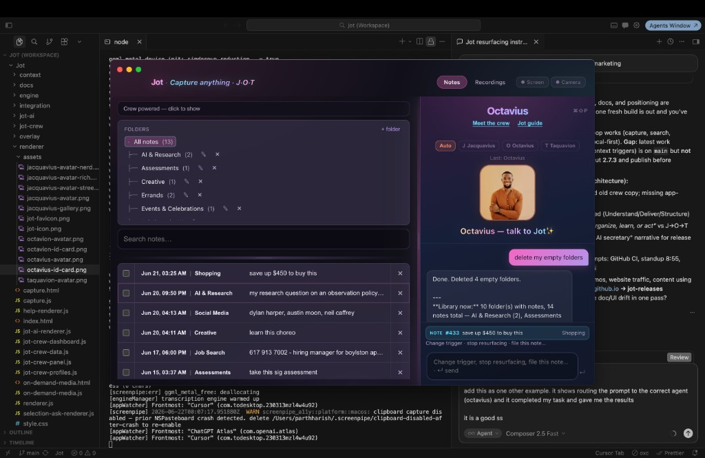

Jot
This site is simple. The apps are not.
Try the crew
Talk to Jacquavius (organize), Octavius (interact), and Taquavion (resurface). Browser demo — routing is real; replies show what each brother would do in the Mac apps.
Octavius
Auto — routes by what you type
Examples:
J.O.T. Reminders — free
One job: capture a when in plain English, get one calm card back when time or app matches. No library maze — just capture → save → resurface.
- ⌘J quick capture · optional screenshot
- Natural language: “tomorrow at 9”, “when I open Slack”
- Local-first · macOS · download free
Jot Workspace — $20/month
The full platform: folders, notes, crew chat, screen & camera recordings. Same brothers — Jacquavius files, Octavius talks, Taquavion delivers — inside a resizable three-panel workspace.


- Crew chat ⌘⇧P with real organize → interact → resurface loop
- Notes library, search, triggers, and recordings in one window
- Built for people who outgrow “just reminders” — $20/month